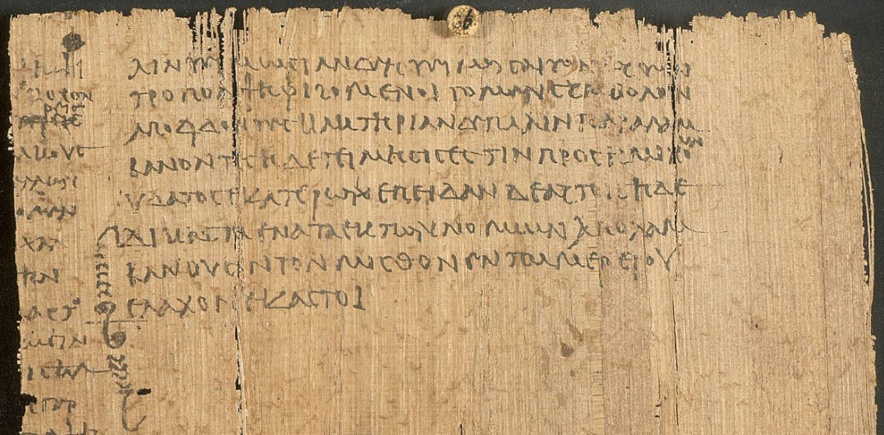

Optima Academy Online
An Education Experience Company
M/J CIVICS
Quarter / Module
Q1 · Module 1
Greco-Roman Foundations
Primary Source
Week 1 · Source 1
Author & Work
Aristotle, Constitution of the Athenians
Pairs With
Lesson 1.1 · Critical Questions 1.1 (Canvas)
Primary Source 1
Aristotle, The Constitution of the Athenians, ch. 21
Read this, then complete Critical Questions 1.1 in Canvas.
📖 CONTEXT
Aristotle (or a student writing in his school) describes exactly how Cleisthenes rebuilt Athenian political identity after the tyranny of Pisistratus and his sons: new tribes, new demes, and a new Council. Read it alongside Lesson 1.1's account of what Cleisthenes actually changed.

📜 THE TEXT
“First then he [Cleisthenes] distributed the whole population into ten tribes in place of the existing four, wishing to intermix the members of the different tribes, so that more persons might have the franchise… he divided the country into thirty groups of demes… and each tribe was to contain ten of these groups, chosen by lot, so that each tribe should have parts in all districts. He made the men in each deme fellow-demesmen of one another, so that the new citizens might not be exposed by the habitual use of family names, but that people might be known by the name of their demes; accordingly it is by the names of their demes that Athenians speak of one another. He also instituted the Council of Five Hundred in place of the Four Hundred, fifty from each tribe, whereas the earlier number had been a hundred from each of the four old tribes.”
(Adapted from the standard Kenyon/Rackham translation, condensed for length.)
💡 A NOTE ON TRANSLATION
The phrase “so that more persons might have the franchise” renders a passage the translators themselves flag as difficult Greek, and the rendering is explicitly conjectural. More recent translations render the same passage as “expanding the citizenry” instead. That difference matters: ordinary Athenians already had the right to vote in the Assembly before Cleisthenes. What the passage is actually describing is Cleisthenes's use of new demes and new tribes to bring recent immigrants, who had lacked any of the four old tribal names, into citizenship for the first time.
➡️ WHAT YOU'LL DO NEXT
1
Critical Questions 1.1 (Canvas)
Reread the excerpt above, including the translation note, before answering the two questions in Canvas.
Optima Academy Online · M/J CIVICS · Quarter 1 · Primary Source Page
Week 1 · Aristotle, The Constitution of the Athenians
© Optima Academy Online · An Education Experience Company